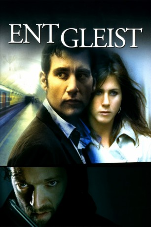

#2450 Entgleist
Alternativ: Derailed
 
 IMDB-Wertung: 6.6 / 10
IMDB-Wertung: 6.6 / 10  Metascore: 40
Metascore: 40 
Entgleist ist die US-amerikanische Verfilmung des gleichnamigen Psychothrillers von James Siegel, in welchem Charles Schine, ein erfolgreicher Geschäftsmann und Familienvater eine Affäre mit einer anderen Frau beginnt. Als die beiden von einem Erpresser mit Briefen bedroht werden, müssen die beiden sich zusammen reißen und die komplizierten Beziehungen entwirren.
Jahr: 2005
Dauer: 108 Minuten
FSK: 16
Land: USA Studio: Weinstein Company, TheTonspuren: DD5.1 - ,
Untertitel: Englisch,
Auflösung: 1080p (1920x824) Größe: 9256 MB
Genre: Drama, Thriller
Regisseur: Mikael Håfström
Drehbuch: Stuart Beattie, James Siegel
Soundtrack: Ed Shearmur
Darsteller:
 Vincent Cassel als LaRoche
Vincent Cassel als LaRoche Clive Owen als Charles Schine
Clive Owen als Charles Schine- Addison Timlin als Amy Schine
 Melissa George als Deanna Schine
Melissa George als Deanna Schine Jennifer Aniston als Lucinda Harris
Jennifer Aniston als Lucinda Harris RZA als Winston Boyko
RZA als Winston Boyko Tom Conti als Eliot Firth
Tom Conti als Eliot Firth- Rachael Blake als Susan Davis
 Richard Leaf als Night Clerk Ray
Richard Leaf als Night Clerk Ray Xzibit als Dexter
Xzibit als Dexter Catherine McCord als Avery Price Receptionist
Catherine McCord als Avery Price Receptionist Denis O'Hare als Jerry the Lawyer
Denis O'Hare als Jerry the Lawyer Georgina Chapman als Candy
Georgina Chapman als Candy David Oyelowo als Patrol Officer
David Oyelowo als Patrol Officer Giancarlo Esposito als Detective Church
Giancarlo Esposito als Detective Church- Jennifer Joan Taylor als Real Estate Agent
 David Morrissey als Sam Griffin
David Morrissey als Sam Griffin Sam Douglas als Homicide Detective
Sam Douglas als Homicide Detective- Chiké Okonkwo als Paramedic
- Floyd Bradley als Man in Bar , uncredited
- Jason Camp als Inmate , uncredited
- Chenique Charmaine als Commuter , uncredited
- Aimee Denaro als Waitress , uncredited
 Sue Durso als Park Scene and Murder Scene , uncredited
Sue Durso als Park Scene and Murder Scene , uncredited- James Fisher als Barman , uncredited
 Reese Foster als Train Passenger , uncredited
Reese Foster als Train Passenger , uncredited- Beth Hebert als Train Commuter , uncredited
- Georgiana Jianu als Business Woman , uncredited
- Cherie Nichole als Executive Assistant , uncredited
- Ike Ononye als Prison Inmate , uncredited
- Ernest Pierce als Prisoner , uncredited
 Mel Raido als Business Executive , uncredited
Mel Raido als Business Executive , uncredited- Gary Sedlock als Train Commuter , uncredited
- Georgie Smith als Business Woman , uncredited
- Michael Stailey als Business Commuter , uncredited
- Richard Strobel als Commuter , uncredited
- Ron Valdez als Commuter , uncredited
- Sandra Bee als Train Conductor
- William Armstrong als Accountant
- Claire Lubert als Bank Teller
- Ortis Deley als Lake Hotel Police Officer
 Danny McCarthy als Correctional Officer Hank
Danny McCarthy als Correctional Officer Hank- Rayn Romain als Correctional Officer 2
- James Crisman als Prison Guard 1
- Marcus Holton als Prison Guard 2
- Leo McCoy als Prison Guard 3
- Roberto Rangel als Prison Guard 4
- Ronald Tanner als Man in Prison Laundry
- Dozer als Bernie the Dog
- Joshua Brail als School Child , uncredited
Datei: X:\2005(A-F)\Entgleist (2005, FSK16, 1920x824).mkv seit 11.11.2015
Festplatte: HD 2003-2004-2005(A-F)
 Es gibt insgesamt 49 Filme in der Gruppe '2005(A-F)'
Es gibt insgesamt 49 Filme in der Gruppe '2005(A-F)'